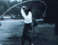

|
BOBBY JONES  |
『How I Play Golf』 |
発行：昭和 年 月 日 発売：サイバービジョン 収録：各90分 定価：86,000 |
| 林 由郎 （はやし よしろう） |
『特訓ゴルフ教室』 （１）ドライバー編 スライス、フック、ティーアップ、ミスショット （２）フェアウェイ編 アイアン、左足上がり、左足下がり、つま先上がり、つま先下がり、 ラフ、トラブル、フェアウェイ・バンカー （３）アプローチ編 手首の使い方、ピッチショット、ピッチエンドラン、 ランニングアプローチ、傾斜、バンカー、パッティング |
発行：平成1年11月3日 |
| Se Ri Pak （パク・セリ） |
『ウイナーズ・ゴルフ』 |
発行：平成11年4月10日 発売：竹書房 収録：50分＋45分 定価：各3,675 |
| 涂 阿玉 （と あぎょく） |
『ゴルフ入門』 しなやかゴルフでスコアアップ |
発行：平成63年7月23日 発売：大陸書房 収録：各30分 定価：各1,800 |
| 岡本 綾子 （おかもと あやこ） |
『飛びの秘密』 |
発行：昭和60年 月 日 発売：日本ビクター 収録：53分＋57分 定価：5,000 |
| 森口 祐子 （もりぐち ゆうこ） |
『ＮＨＫベーシックゴルフ』 （１）スイング編 グリップ、アドレス、フィニッシュ （２）ショートゲーム編 ピッチショット、バンカー越えのアプローチ、バンカーショット、 ランニングアプローチ、パッティング |
発行：昭和63年 月 日 発売：ＮＨＫサービスセンター 収録：各40分 定価：各9,800 |
| 杉原 輝雄 （すぎはら てるお） |
『ＮＨＫゴルフ・レッスン』 （１）スイングの基本 （２）ドライバー （３）アイアン （４）フェアウェイ・ウッド （５）グリーンをねらう （６）バンカーションとパッティング |
発行：平成3年8月21日 発売：アポロン 収録：46,42,44,47,45,45分 定価：各2,400 |
| BOB TOSKI ボブ・トスキー |
『ゴルフ・スクール』 |
発行：平成3年9月10日 発売：廣済堂出版 収録：45分 定価：2,980 |
|
BILLY CASPER |
『ゴルフ上達法』 グリップ、スタンス、ボール位置、ドライバー、フェアウェイウッド、 ロング・ミドル・ショートアイアン、難しいライ、トラブルショット、 パット、水面打ち |
発行：平成1年5月14日 発売：大陸書房 収録：50分 定価：2300 |
| ART SELLINGER アート・センリンジャー |
『飛ばしのテクニック』 グリップ、プレ・ルーティン、スタンス、テイクバック、リリース、 フェード・ドロー、ロフト、シャフト |
発行：平成1年5月14日 発売：大陸書房 収録：30分 定価：1,980 |
| 江連 忠 （えづれ ただし）＆ JIM McLEAN ジム・マクリーン |
『スイング改造の基本』 | 発行：平成7年 月 日 発売：ゴルフダイジェスト社 収録：50分 定価：3,800 |
| 浜 伸吾 （はま しんご） ＆ 杉本 真美 （すぎもと まみ） |
『ウィークポイント攻略法』 |
発行：平成1年5月1日 発売：ナツメ社 収録： 分 定価：2,300 |
| DEREK HARDY デレック・ハーディー |
『ＮＨＫゴルフ入門 レディース＆ヤング』 （１）基本編 プレスウィング、ハーフスウィング、フルスウィング、パッティング、 チップショット、ピッチショット （２）実践編 ティーショット、フェアウェイウッド、バンカーショット、 トラブルショット、ラウンド・インストラクション |
発行：平成2年10月29日 発売：ゴルフダイジェスト社 収録：各45分 定価：3,500 |
| SCOTT SIMPSON スコット・シンプソン ＆ 中島 千尋 （なかじま ちひろ） |
『最新ナチュラル打法』 |
発行：平成2年4月10日 発売：日本文芸社 収録：各45分 定価：各3,500 |
| 渡辺 弘太郎 （わたなべ こうたろう） |
『これでダメならゴルフをやめろ！』 |
発行：平成 年 月 日 発売：オフィスエムエイビー 収録：30分 定価：2,500 |